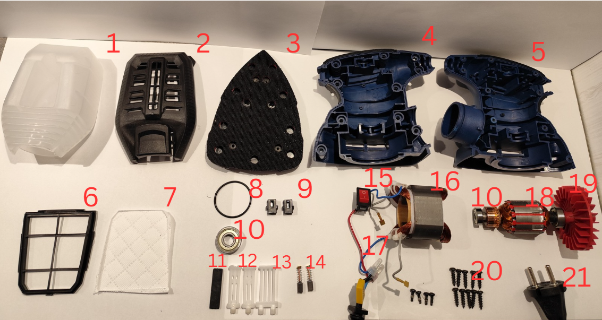
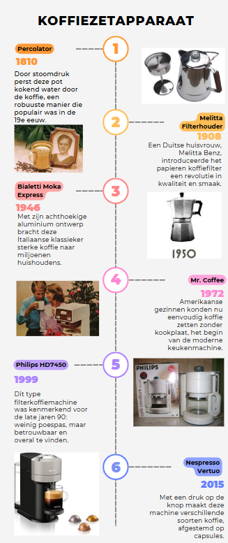

A deep dive into a 1999 filter coffee machine — what it got right, what it got wrong, and why it still matters 25 years later.

The assignment: pick a real product and analyse it — not just what it looks like, but how it was designed for its era, what the engineering decisions were, and how well it holds up today. The Philips Café Comfort was chosen for exactly one reason: it's the kind of product most people would never look twice at. Which made it interesting.
Understanding a product means understanding its moment. The timeline below maps the evolution of domestic coffee machines — from the first percolator in 1810 to the Nespresso capsule in 2015. The Philips HD40 sits at a specific inflection point: after Italian espresso culture went mainstream, just before digital controls arrived.

200 years of coffee — from percolator to capsule
The exploded view tells the story better than any paragraph. The Café Comfort is a model of purposeful simplicity — every component has a clear function, nothing is hidden, and the whole thing can be serviced without special tools. In 1999, that wasn't an accident. It was a deliberate choice to design for the everyday user.
Full disassembly — 21 numbered components, all identifiable and functional
Mostly yes. The form is practical and unassuming — which is now called "retro" and sold at a premium. The mechanics are reliable and repairable, two things modern appliances actively avoid. Where it falls short: energy efficiency, ergonomics, and aesthetics that assume the kitchen is beige. A redesign wouldn't need to reinvent it. Just update what 25 years of user expectations have changed.
"How has the design and usability of the Philips Café Comfort from 1999 held up against the changing needs of users over the past 25 years?"
— Main research question, Product Analysis